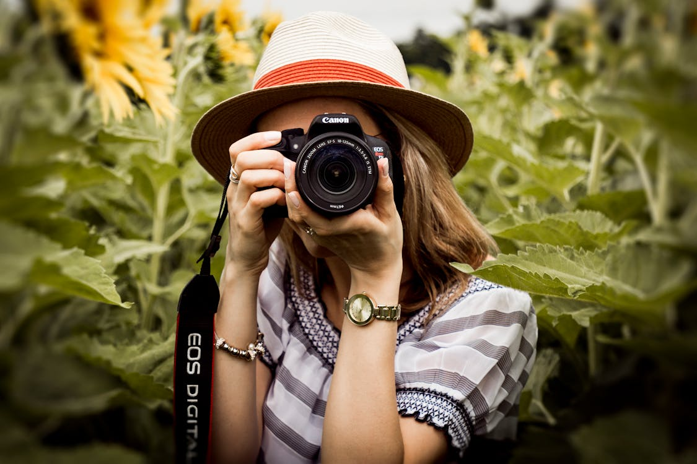
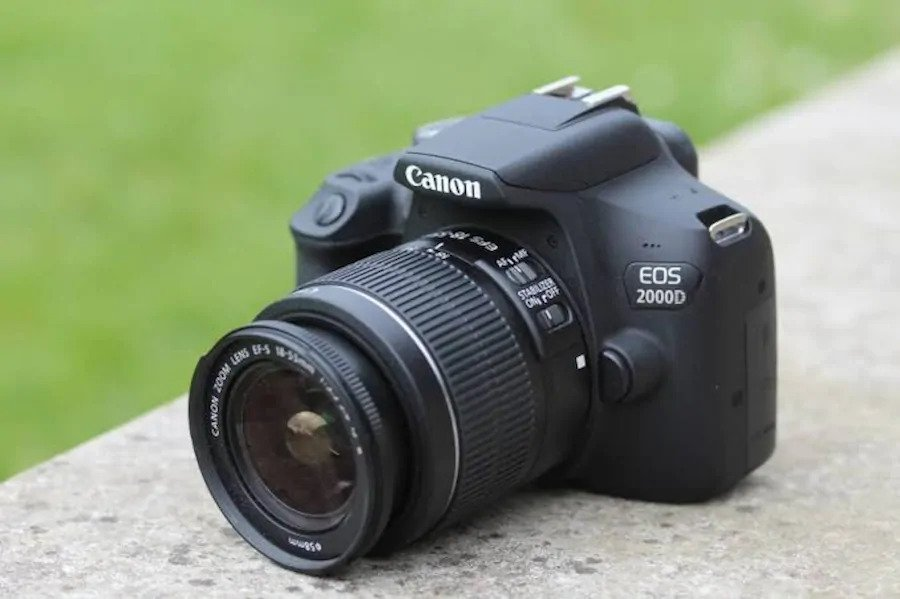

Yeni Başlayanlar İçin Fotoğrafçılık Rehberi
FotoÄŸrafçılığa ilgi duymaya başladıysanız ama nereden başlayacağınızı bilmiyorsanız, doÄŸru yerdesiniz. Bu yazıda temel tekniklerden ekipman önerilerine kadar başlangıç seviyesinde bilmeniz gereken her şeyi sade bir dille anlatacağım.
1. Fotoğrafçılığın Temel Kavramları
- Diyafram (Aperture): Işığın sensöre ne kadar gireceğini kontrol eder. f/1.8 gibi düşük değerler daha fazla ışık alır, arka planı bulanıklaştırır.
- Enstantane (Shutter Speed): Perdenin açık kaldığı süredir. Hızlı enstantane hareketi dondurur, yavaş olan ise iz bırakır.
- ISO: Sensörün ışığa duyarlılığıdır. ISO arttıkça daha fazla ışık alınır ama görüntü kalitesi düşebilir.
2. Hangi Kamera ile Başlamalı?
Yeni başlayan biri için giriş seviyesi bir aynasız ya da DSLR yeterlidir. Canon EOS R50, Nikon Z50 veya Sony a6100 gibi modeller önerilebilir. Akıllı telefonlar da başlangıç için harika bir araçtır.
3. Gerekli Ekipmanlar
Başlangıçta kit lens kullanmak idealdir. Tripod, hafıza kartı ve temizlik seti de önerilir. Zamanla sabit odaklı lensler veya geniş açı lenslerle donanımınızı geliştirebilirsiniz.
4. Kompozisyon Kuralları
- Üçler kuralı (Rule of Thirds)
- Öncü çizgiler (Leading Lines)
- Negatif alan (Negative Space)
- Kadrajda denge
5. Işıkla Oynamayı Öğrenin
Gün doğumu ve batımı sırasında oluşan “altın saat” ışığı, fotoğraflarınızı yumuşatır. Işık yönünü gözlemlemek ve gölgelerle çalışmak, kadrajlarınızı çok daha etkileyici hale getirebilir.
6. Telefonla Fotoğraf Çekmek
Akıllı telefonlar güçlü birer kamera taşıyor. Manuel kontrol imkanı sunan uygulamalarla RAW çekebilir, Snapseed veya Lightroom Mobile gibi uygulamalarla düzenleme yapabilirsiniz.
7. Bol Bol Pratik Yapın
Her gün fotoğraf çekin. Hatalarınızdan öğrenin, ilham alın ama özgün kalın. Gözünüz zamanla “fotoğraf görmeyi” öğrenir.
8. Sonuç
Fotoğrafçılık öğrenmesi sabır isteyen ama çok keyifli bir yolculuktur. Kendinize zaman tanıyın ve sürecin tadını çıkarın. Unutmayın, en iyi kamera her zaman yanınızda olan kameradır.
Bu yazıyı paylaş: